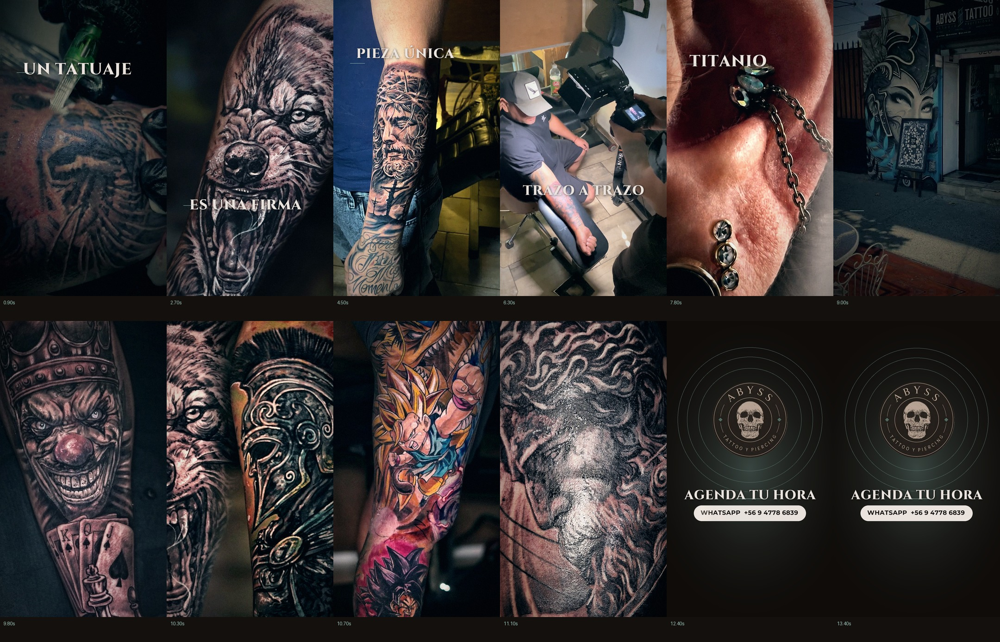

El audio es una banda sintetizada a 100 BPM: si no lo escuchas, revisa el volumen del reproductor.
Escaleta
Ocho bloques sobre rejilla de 0.6 s. Toca un bloque para saltar a ese punto.
Abyss Tattoo Studio · José Joaquín Pérez 528, San Bernardo
El audio es una banda sintetizada a 100 BPM: si no lo escuchas, revisa el volumen del reproductor.
Ocho bloques sobre rejilla de 0.6 s. Toca un bloque para saltar a ese punto.
Doce fotogramas del máster, extraídos en el render.
